확인 페이지
시안대로 됐는지 보는 곳
오른쪽 캡처는 그림이 아니라 실제로 도는 앱을 375px 에서 찍은 것입니다. 화면을 고칠 때마다 이 캡처가 갱신되므로, 새로고침하면 진행 상황이 그대로 보입니다.
http://localhost:3000,
폰은 같은 와이파이에서 http://192.168.0.245:3000 입니다.
/ → "로그인 없이 둘러보기" → 온보딩 4단계를 지나면
/main 에 닿습니다. 다만 게스트로 들어가면 플랜이 비어 있어,
데이터가 찬 상태는 아래 캡처가 더 정확합니다.
머리 면 · D-day 두 줄 · 회색 채움 카드 · 이번 달 / 그 다음 두 묶음. 카테고리 칩과 계획 중·완료 탭은 시안대로 걷어냈습니다.
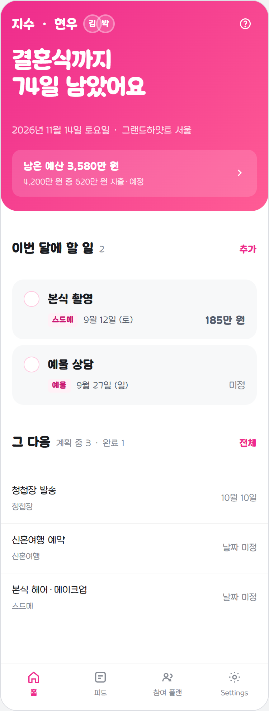

맞춤 완료. 커플명 42px→18px, D-day 22px 한 줄→32px 두 줄,
아바타 40px 컬러→26px 반투명. 머리 면이 가장자리까지 펴집니다
(items-center 때문에 음수 마진이 상쇄되던 것을
self-stretch 로 해결).
탭바(공용)도 시안 값으로. 4등분 그리드 · 위 헤어라인 ·
아이콘 22px · 라벨 11px · 활성색 #ee2b8c ·
미읽음 배지를 말풍선에서 작은 원으로. 12개 화면에 한 번에 적용됩니다.
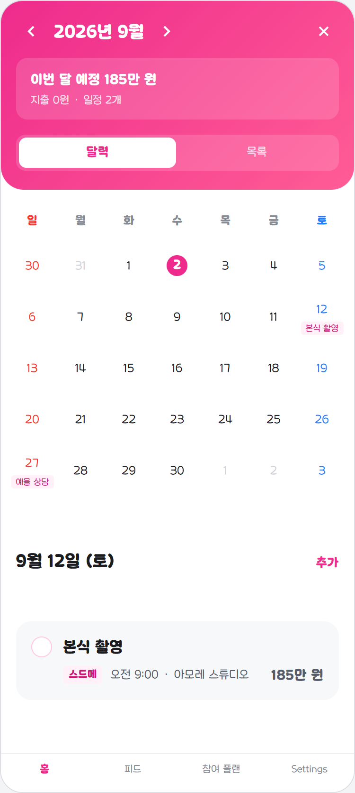

맞춤 완료. 머리 구성(‹ 달 › · 닫기),
합계를 얇은 상자 2줄로, 달력 / 목록 세그먼트, 격자 선 제거,
그날 일정을 바텀 시트에서 달력 아래 목록으로. + 는
머리에서 빼고 그날 목록의 추가가 맡습니다.
캡처가 오늘(9/4) 기준이라 "이 날은 비어 있어요" 입니다 — 시안은 일정이 있는 12일을 골라 둔 예시라 데이터 차이입니다.
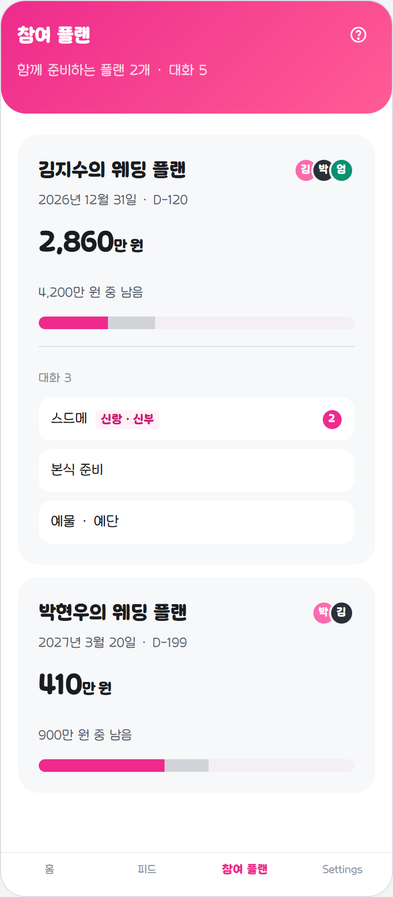

머리 면 · 회색 채움 카드 완료.
아직 다름 — 아바타가 크고 컬러입니다(시안은 24px 회색톤). 제목이 두 줄로 끊기고, 채팅방 줄의 아이콘 타일도 시안보다 큽니다.
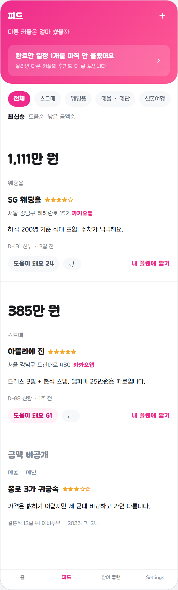

머리 면 · 카드→구분선 완료.
아직 다름 — 카테고리 칩이 알약 테두리형이고 정렬이 알약입니다 (시안은 채움 칩 + 글자 정렬). "안 올린 일정" 띠가 아직 목록 위에 있습니다.
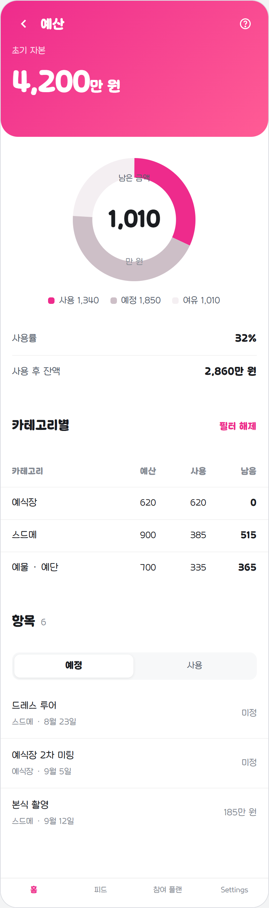

머리 면 · 항목 목록 구분선 완료.
아직 다름 — 도넛이 카드 안에 있고, 카테고리가 사용 / 예산 한 덩어리입니다. 시안은 카드 없이 도넛 + 예산·사용·남음 3열 표입니다.
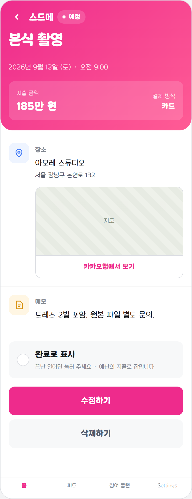

거의 일치. 머리 면 · 상태 알약 · 완료로 표시 · 구분선 타일까지 끝났습니다.
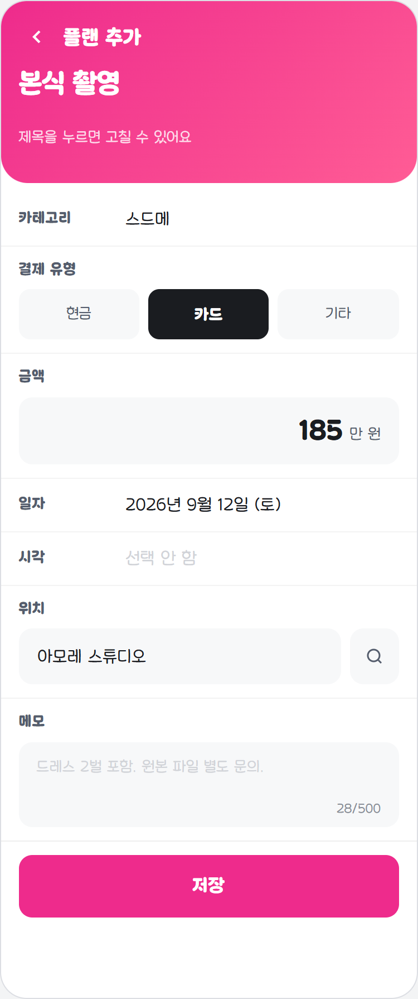

머리 면 · 시트 한 장 완료.
아직 다름 — 입력 칸이 시안의 84px 라벨 열 짜임이 아니라 위아래로 쌓입니다. 저장 버튼도 아직 시트 아래 고정이 아닙니다.
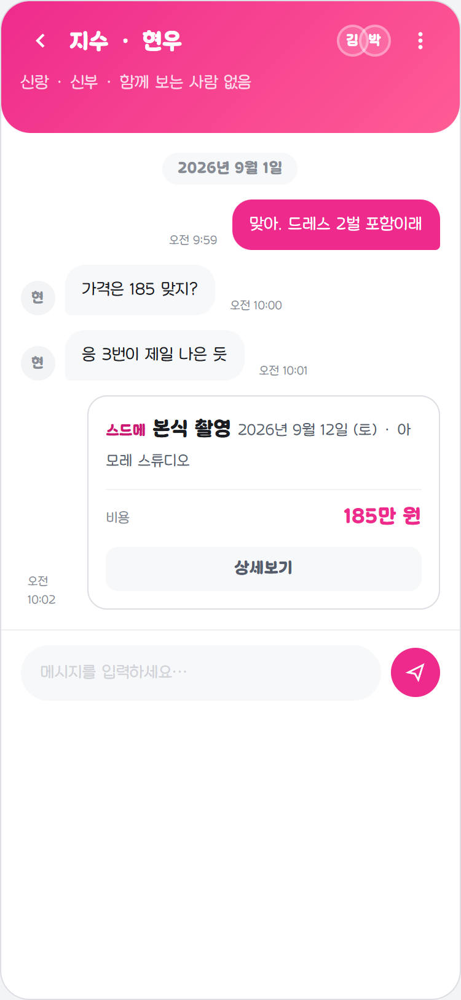

머리 면 완료. 말풍선은 원래도 내 것만 분홍이라 손대지 않았습니다.
아직 다름 — 입력창이 시안보다 큽니다.
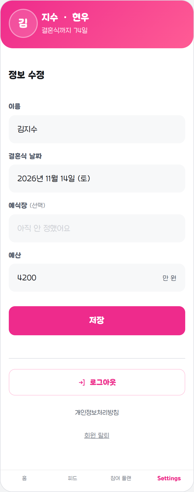

머리 면 · X 제거 · 채움 필드 완료.
아직 다름 — 폼이 아직 흰 카드 두 장 안에 들어 있습니다. 시안은 카드 없이 필드가 바로 놓입니다.
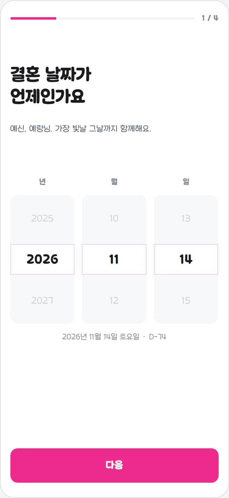

점 패턴 제거 · 진행 막대 신설 완료. 면은 시안대로 달지 않습니다.
아직 다름 — 날짜 휠이 시안의 채움 상자 3열이 아니고, 고른 값을 문장으로 보여 주는 줄이 없습니다.
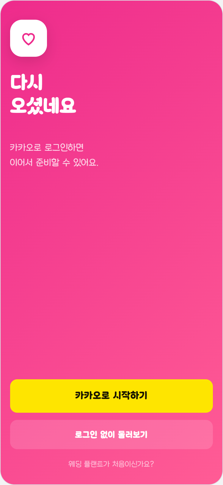

거의 일치. 면을 화면 전체로 편 것까지 끝났습니다.
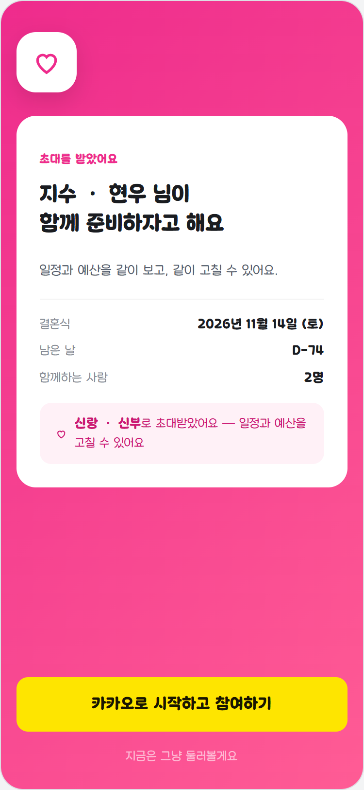

머리 면 · 역할 안내 · 빠져나갈 길 완료.
아직 다름 — 시안의 흰 초대 카드(결혼식 날짜·D-day·인원)가 없습니다. 초대한 사람의 정보를 로그인 전에 읽을 공개 API 가 없어서, 지어내지 않고 비워 뒀습니다.
이 페이지는 자동으로 갱신됩니다. 화면을 고칠 때마다 하네스가
docs/concepts/shots/real-*.png 를 다시 찍으므로, 브라우저에서
새로고침(Ctrl+R) 만 하면 최신 상태가 보입니다. 시안 쪽
(plan-*.png)은 c-*.html 을 렌더해 뽑은 것이라
시안을 고치면 같이 갱신됩니다.